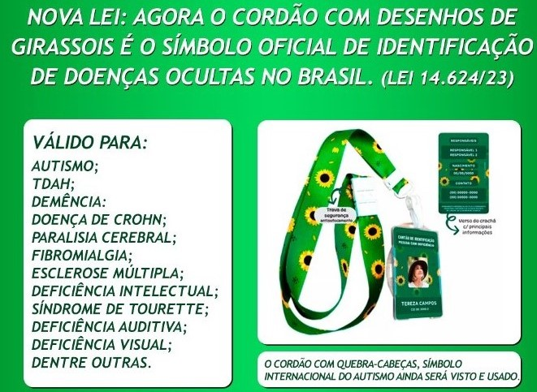
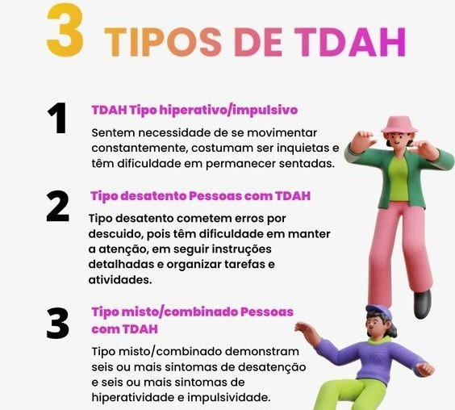
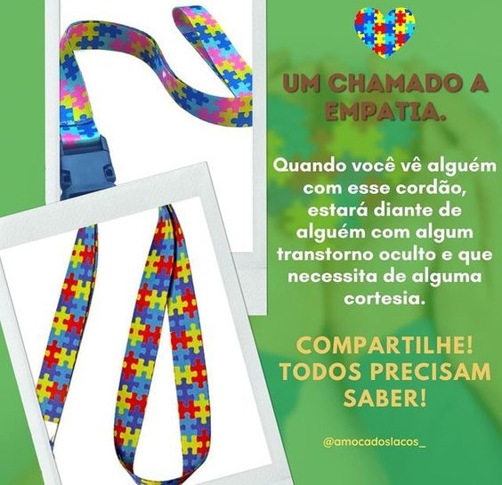

Fique por dentro da notícia!
Olá, seja bem vindo (a)!
Nosso site está centrado na promoção da inclusão de pessoas com deficiências ocultas, com um foco especial no Transtorno do Espectro Autista (TEA) e no Transtorno de Déficit de Atenção e Hiperatividade (TDAH).
Além disso, oferecemos informações acessíveis para o público em geral. Aqui, você encontrará recursos informativos e educacionais abrangentes sobre esses transtornos, cobrindo aspectos como suas características, diagnóstico, tratamento e estratégias de inclusão.
Nossa missão é impulsionar a compreensão e a aceitação, contribuindo para a criação de um mundo mais acessível e inclusivo, onde todas as pessoas sejam valorizadas, independentemente de suas diferenças."
Atenciosamente,
Alexsandra Tavares
É fundamental estar ciente disso!

O cordão de girassol virou oficialmente o símbolo das pessoas com deficiências ocultas ou não-aparentes, como surdez, autismo e deficiência intelectual. A lei 14.624/23, que torna oficial o uso do cordão com desenhos de girassóis, foi sancionada em julho pelo governo federal.
Diferentes Variações do TDAH

Pessoas com TDAH tipo desatento cometem erros por descuido, pois têm dificuldade em manter a atenção, em seguir instruções detalhadas e organizar tarefas e atividades. Também podem ter uma memória de trabalho fraca, se distraírem facilmente com estímulos externos e perderem coisas constantemente.
Quem deve usar o cordão do autismo?

O uso de acessórios, em muitos casos, é comum entre pessoas que enfrentam desafios relacionados a deficiências ocultas e/ou invisíveis, que englobam condições de saúde não facilmente identificadas ou visíveis externamente. Essas condições podem abranger uma ampla variedade de transtornos, como Transtorno do Espectro Autista (TEA), Transtorno de Déficit de Atenção e Hiperatividade (TDAH), depressão, ansiedade, síndrome de fadiga crônica, entre outras. Para muitos indivíduos que vivem com essas condições, esses acessórios não apenas auxiliam na gestão de sintomas e na melhoria da qualidade de vida, mas também servem como uma forma de comunicar suas necessidades e desafios às pessoas ao seu redor, muitas vezes invisíveis aos olhos, mas igualmente significativos e impactantes em suas vidas diárias.